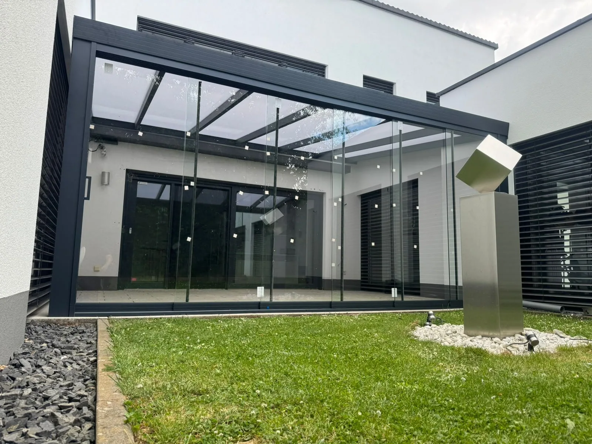

Glasdach
Lichtdurchflutet und offen: für einen ungehinderten Blick in den Himmel.
Draußen zu Hause
Machen Sie Ihre Terrasse zu einem geschützten Ort zum Entspannen. Eine durchdachte Überdachung verbindet Haus und Garten und passt sich harmonisch Ihrer Architektur an.
Beratung anfragen
OriginalfotoMöglichkeiten entdecken
Gemeinsam finden wir die passende Ausführung.
Lichtdurchflutet und offen: für einen ungehinderten Blick in den Himmel.
Flexibler Schatten für Ihren Sitzplatz. Ausführung und Bedienung planen wir passend zu Ihrem Alltag.
Ergänzen Sie Ihre Überdachung mit passenden seitlichen Elementen für mehr Geborgenheit.
Gut zu wissen
Jedes Projekt ist anders. Im persönlichen Gespräch klären wir die Details.
Noch eine Frage?Das hängt von der vorhandenen Terrasse, der Ausrichtung und Ihren Wünschen ab. Gemeinsam betrachten wir die Einbausituation und besprechen Material, Dachform und mögliche Ergänzungen.
Das ist je nach Untergrund, Befestigung und Platzverhältnissen möglich. Die Voraussetzungen werden vor der konkreten Planung vor Ort geprüft.
Senden Sie uns eine kurze Beschreibung, ungefähre Maße und gern ein Foto Ihrer Terrasse. So können wir die ersten Möglichkeiten mit Ihnen besprechen.
Gemeinsam beginnt etwas Gutes
Ob erste Idee oder konkreter Plan – wir freuen uns auf Ihr Projekt.